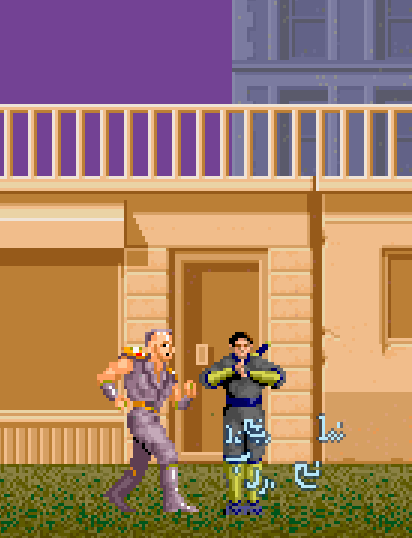
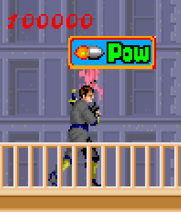
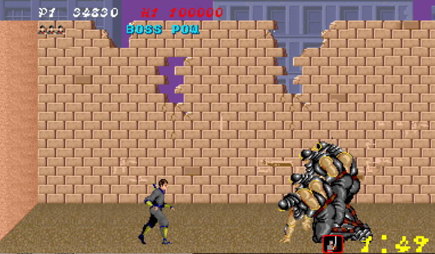

Welcome to
SHINOBI BY
NO FURRY GAMES
NO FURRY GAMES
SHINOBI
忍Shinobi is basically a horizontal scrolling action game, in which the player moves to the right while taking down the enemies in his path,
using his shuriken, a ninjato, and special ninja magic. Also an important objective is to rescue the kidnapped ninja children
Team Members:
-
JiaJie
UI Programmer, In charge of the user interface, obtaining UI elements, and fonts
Lin -
Guillem
Lead Animator, In charge of recreating frame by frame animations. Charge of the particle system.
Montes -
Marti
Lead Programmer, main game systems, modules, player, maps, debug, etc...
Sabate -
Rafael
AI Programmer, in charge of making the enemies of the video game
Fernandez -
Eduard
Sound worker, is in charge of the sound system, as well as obtaining these.
Garcia
Github Repository
Here you will find our progress over 4 months, including all the processes from obtaining sprites to the final delivery of the Alpha version.[REPOSITORY]
Documentation about the project
Here you will find documentation about our SHINOBI video game, including assets, a general analysis, sounds, etc. [DOCUMENTATION]


